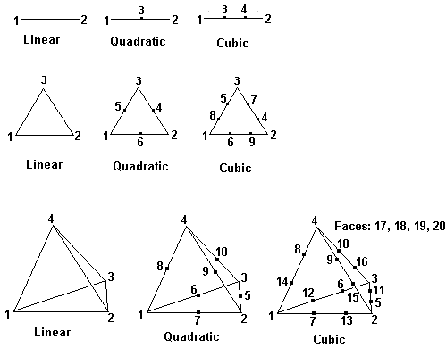

The format of a TRANSFER file is dictated by the TRANSFER output format, and contains the following data.
The Header Section
1) A header containing an identifying section listing the FlexPDE version, generating problem name and run time, and plotted variable name or function equation. This header is enclosed in comment brackets, { ... }.
2) A file identifier "FlexPDE transfer file", and the problem title.
3) The number of geometric dimensions and their names.
4) The finite element basis identifier from 4 to 10, meaning:
| • | 4 = linear triangle (3 points per cell) |
| • | 5 = quadratic triangle (6 points per cell) |
| • | 6 = cubic triangle (9 points per cell) |
| • | 7 = cubic triangle (10 points per cell) |
| • | 8 = linear tetrahedron (4 points per cell) |
| • | 9 = quadratic tetrahedron (10 points per cell) |
| • | 10 = cubic tetrahedron (20 points per cell) |
5) The number of degrees of freedom (points per cell as above).
6) Current problem time and timestep (time-dependent problems only).
7) The number of output variables and their names
8) The number of domain joints (boundary break points) and their descriptions, including
| • | Periodic image joint (or 0) |
| • | Associated global node number |
| • | Extrusion surface (or 0) |
9) The number of domain edges and their descriptions, including
| • | Associated base plane edge number |
| • | Periodic image edge (or 0) |
| • | Extrusion surface (or 0) |
| • | Active, Feature and Contact flags |
10) The number of 3D domain faces and their descriptions, including
| • | Associated base plane face number |
| • | Left adjoining Region number |
| • | Right adjoining Region number |
| • | Periodic image face (or 0) |
| • | Active and Contact flags |
11) The number of domain regions and their descriptions, including
| • | Associated base plane region number |
The Data Section
Each distinct material type in the exported problem is represented by a separate section in the TRANSFER file. Material types are defined by matching parameter definitions. Each data section consists of:
1) The number of nodes
2) The nodal data, containing one line for each node with the following format:
| • | two or three coordinates and as many data values as specified in (7). |
| • | the node type (0=interior; 1=joint; 2=edge; 3=face; 4=exterior) |
| • | the type qualifier (region number, joint number, edge number or face number) |
3) The number of cells.
4) The cell connectivity data, one line per cell, listing the following:
| • | the geometric basis (as in Header 4) |
| • | the node numbers (local to the current material block) which comprise the cell. The count of these node numbers is controlled by (Header 5). |
| • | the logical region number |
The node numbers are presented in the following order:

Page url:
index.html?transferfileformat.html